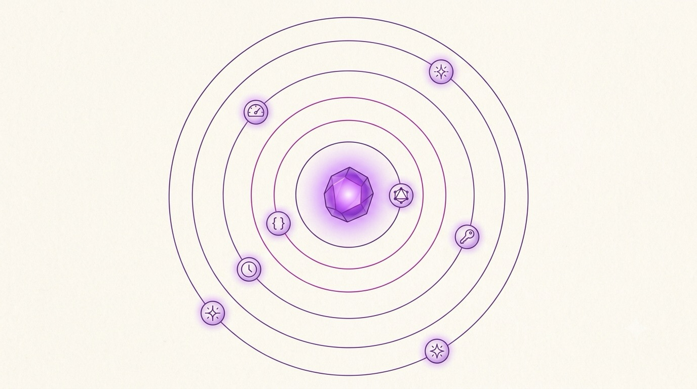

Chapter 08 · Derive The Rest
8The Ecosystem
This is the payoff of “model your domain, derive the rest.” Each extension reads your resources and generates a whole capability.
Because your actions are introspectable and typed, an extension can look at a resource and build an entire API, admin screen, or job pipeline from it — usually with a few lines of opt-in. You've already met one extension: AshPostgres, the data layer. Here are the others you'll reach for most:
| Extension | What it derives |
|---|---|
AshPostgres | PostgreSQL persistence + generated migrations. |
AshGraphQL | A GraphQL API — queries & mutations from your actions. |
AshJsonApi | A JSON:API-compliant REST API. |
AshAuthentication | User sign-in: passwords, magic links, OAuth. |
AshAdmin | An auto-generated admin UI over your resources. |
AshStateMachine | Declared state transitions for a resource. |
AshOban | Background jobs & scheduling wired to actions. |
AshAi | LLM-powered tools & structured actions. |

A clean flat-vector editorial illustration of a solar-system / constellation: a single glowing violet core labeled conceptually as the resource at the center, with six small satellite planets orbiting it on thin elegant orbit rings, each satellite carrying a distinct simple icon — a GraphQL hexagon, a REST/JSON braces symbol, a key (authentication), a dashboard/admin gauge, a clock (background jobs), and a small spark/AI node. Warm off-white background, violet and magenta accents with soft glows, generous whitespace, no baked-in text labels. Target size ~1280×720px, 16:9 landscape; keep the core centred with safe margins.
Generate this with your image agent, then drop the file here.
Getting started for real
Ash uses Igniter — a code generator that patches your project — so setup is a single command. Install the generator, then scaffold a new app with Ash (and Postgres) already wired in:
terminal# install the project generator once mix archive.install hex igniter_new # new app, Ash + Postgres installed and configured mix igniter.new helpdesk --install ash,ash_postgres cd helpdesk # generate a resource from the CLI mix ash.gen.resource Helpdesk.Support.Ticket
From there, everything in this book applies: add attributes and actions to the generated resource, list it in your domain, and start calling it.
- Get Started — build the helpdesk end-to-end.
- What is Ash? — the philosophy in full.
- hexdocs.pm/ash — every DSL block, searchable.
- ash.hexdocs.pm/llms.txt — an index built for AI assistants; paste it into your tools.